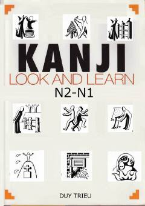

KLN2-N1 darajasidagi kanji belgilarini vizual usulda o'rganish uchun qo'llanma.
Ushbu qo'llanma yapon tilidagi N2 va N1 darajasidagi kanji belgilarini vizual usullar yordamida o'rganish uchun mo'ljallangan. Muallif Kanji Look and Learn va Kanji Pict-o-graphic kitoblaridagi uslublarni birlashtirib, yapon tili o'rganuvchilari uchun qulay va tushunarli qo'llanma yaratgan.